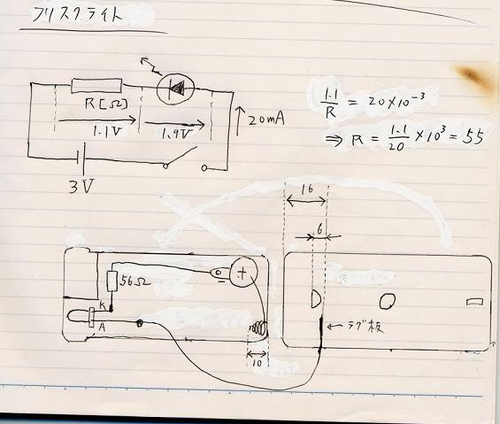
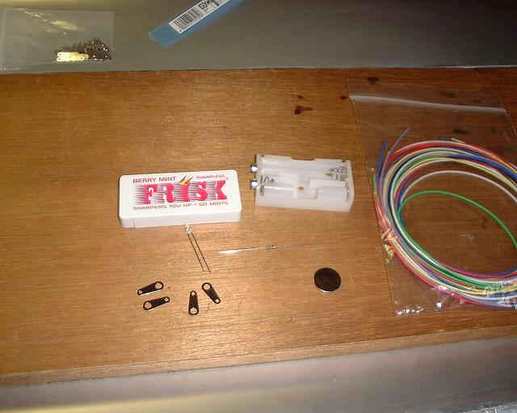
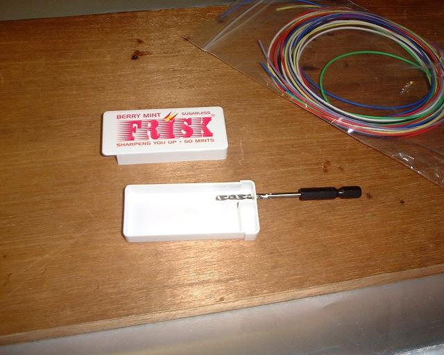
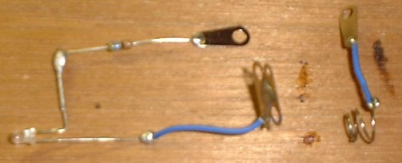
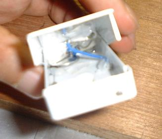
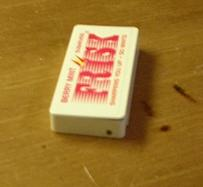
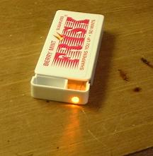
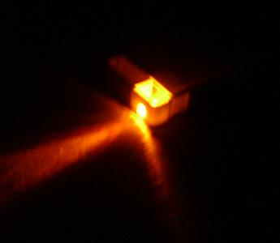
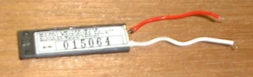
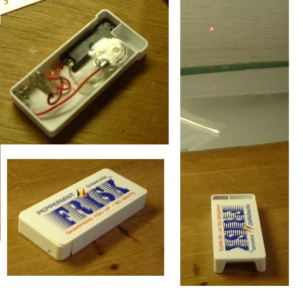

とりあえず設計図を描いてみました。上側が回路図、下側が実装図(かなりいいかげんな)です。ノートの焼け焦げは気にしないでください(^^;)
LED が標準電圧 1.9 V, 標準電流 20 mA のものだったので, それをもとに抵抗値を計算します(計算が冗長なのは私の癖です(^^;)。オームの法則が分かる人ならば何をやっているかわかると思います)。 要するに 20 mA の電流が流れるようにすれば良いので、抵抗の代わりに定電流ダイオードをつなぐ手法もあるそうです。
が、まあ、そんな計算をしなくても、例えばコイン電池やボタン電池につなぐのであれば、抵抗を介さずに電池にそのまま LED をつないでしまっても良いと思います。その方が明るいし。
フリスクライトのポイントは、スイッチをどうするかという一点に尽きると思います。
上蓋に何かを仕込み、ケースをスライドさせた時にスイッチが ON になるような仕組みを作れば良いわけです。ここでは、上蓋にラグ板をくっつけて、スプリングに接触させるという方法をとっています。寸法はかなりいいかげんです。
後から反省すると、スプリングは図よりかなり大きめなので、電池はもう少しスプリングから離れたところに配置するべきでした(スイッチ部分に引っかかる可能性がある)。
どちらにせよ、あまりこの方法はスマートではないような気がします。上記動画の「超簡易版？」の人の方がエレガントですね。

左の写真は部品一覧です。フリスクのケース、LED、抵抗器、コイン電池(←ボタン電池の方が良かったかも)、卵ラグ、配線素材少々、それからスプリング…は余った電池ケースから引っこ抜くことにしました。

まず、LED に合った大きさの穴をケースに開けます。今回用意したのは直径 3mm のものなので、3 mm のドリルを使います。電動ドリルを使えば速いでしょうが、なんとなく危なそうだったので、ドリルビットを手で回して開けました。
そういえば、パーツショップ等で LED の大きさを表すのに「3φ」とか「φ3」と書いてあることがありますが、「φ」は直径を表す製図記号で、「まる」と読むらしいです(「ファイ」ではなく)。


そして、部品をあらかじめつないでおいて…取り付ける…。上右の写真は取り付けた後ですが、きわめて分かりにくいですね。けっこう中はぐちゃぐちゃです(^^;)。



ともかく完成。ただ、なんというか、スイッチの方式が、「カチャ、カチャ」という感じではなく「モサッ、モサッ」という感じになってしまうので、後から思うに、やはりこの方法はあまり良くないような気がします…。
で、フリスクライトの LED を赤色レーザー発光モジュールに代えればレーザーポインターが自作できます。どちらかというとこちらの方が実用の機会が多そうです。
学会発表などで、指し棒の代わりにレーザーポインターを使っている光景がよく見られるのですが、確か、市販のレーザーポインターは 2000 円〜3000 円くらいすると思います。
赤色レーザー発光モジュールは現在 500 円くらいで売られているので、自作すればフリスク代込みでも 1000 円以内。お得です。うまくできればの話ですが…。

左の写真がその赤色レーザー発光モジュールです。
リード線がよれていたのをほぐそうとして、うにうに動かしていたら、線が外れてしまったので(^^;)、あわてて付け直した、その後に撮ったもの。

上と似たようにして配線。前の反省を踏まえて、電池とスイッチ部は離しておきました。
今度はケースの穴は直径 2 mm にしています。
縦長の写真がレーザー光を出している状態です。壁に赤い点が映っています。
今度何か学会等で発表する機会があって、それまでにコレが壊れていなければ、使ってみたいと思います。
{kind=link}
{kind=link}
{kind=link}
{kind=link}
{kind=link}
{kind=link}
{kind=link}
{kind=link}
{kind=link}
{kind=link}